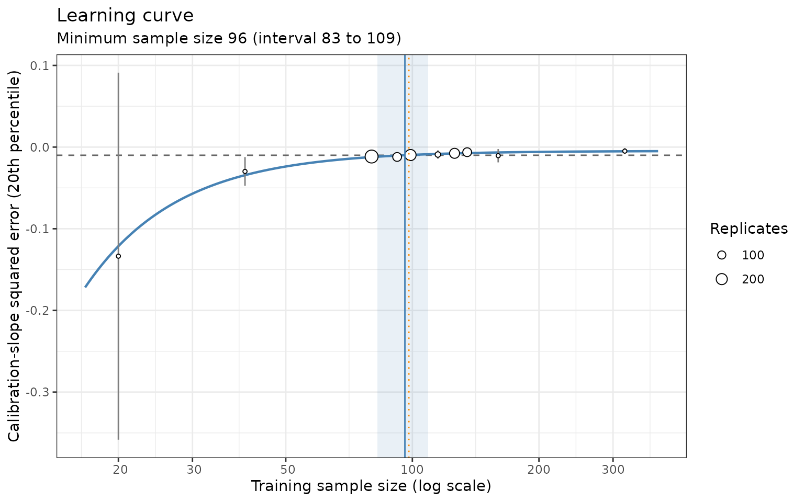

Motivation
Prediction models are often developed using data in which patients are grouped within clusters: hospitals, general practices, schools or study sites. Outcomes for patients in the same cluster tend to be more similar than outcomes for patients in different clusters, and this changes three parts of a sample-size calculation:
- The unit of recruitment. A multicentre study is planned in clusters (“how many hospitals, each contributing 20 patients?”), not in individual patients.
- The model. A mixed model, with a random intercept for each cluster, separates differences between clusters from the effects of the predictors. With many candidate predictors and few events, the predictor effects should also be penalised to limit overfitting.
- The metric. Performance should be measured the way the model will be used. Predictions for patients in a new cluster cannot use that cluster’s random effect, and metrics that ignore clustering mix up differences between clusters with the model’s ability to rank and calibrate risk within them.
None of these is built into simulate_binary(), but each
is one of the three functions passed to simulate_custom().
This article builds all three for a binary outcome and then runs the
sample-size search with the learning-curve engine
(method = "curve", the default).
We use two packages:
pmsims-
glmmTMB, to fit the penalised mixed model.
The scenario
Suppose we are planning a study to develop a model predicting a binary outcome, such as unplanned readmission within 30 days, from 10 candidate predictors measured on patients in different hospitals. We expect:
- each hospital to contribute 20 patients;
- about 20% of patients to have the outcome;
- moderate clustering: an intraclass correlation (ICC) of 0.10;
- 5 of the 10 predictors to be truly associated with the outcome, together giving a within-hospital C-statistic of 0.75; the other 5 are noise.
The question is: how many hospitals do we need?
The data generator
The data-generating model
We generate data from a logistic random-intercept model. For patient \(i\) in cluster \(j\),
\[ \operatorname{logit} P(y_{ij} = 1) = \beta_0 + \sum_{k=1}^{p} \beta_k x_{ijk} + u_j, \qquad u_j \sim N(0, \sigma_u^2), \qquad x_{ijk} \sim N(0, 1), \]
with the \(p\) predictors independent of each other and of \(u_j\).
The generator should be set up in terms that are meaningful when planning a study (ICC, prevalence and C-statistic), not in terms of \(\beta_0\), \(\beta_1, \ldots, \beta_p\) and \(\sigma_u\). These quantities interact, so each one has to be matched to its target:
ICC. On the latent (logistic) scale, the residual variance is \(\pi^2/3\), so
\[ \text{ICC} = \frac{\sigma_u^2}{\sigma_u^2 + \pi^2/3} \quad\Longrightarrow\quad \sigma_u^2 = \frac{\text{ICC}}{1 - \text{ICC}} \cdot \frac{\pi^2}{3}. \]
This is the ICC conditional on the predictors, because \(u_j\) is independent of the predictors.
Within-cluster C-statistic. This measures how well the linear predictor \(\eta = \sum_k \beta_k x_k\) ranks patients within a cluster. It depends on the standard deviation of \(\eta\), but also on \(\beta_0\) and \(\sigma_u\), since a cluster’s event rate changes how many event and non-event pairs it contributes.
Prevalence. The marginal prevalence averages \(\operatorname{logit}^{-1} (\beta_0 + \eta + u)\) over both \(\eta\) and \(u\), so it depends on all three parameters as well.
We could tune these by brute-force simulation, but because \(\eta\) and \(u\) are both normal we can compute the within-cluster C-statistic and the prevalence almost exactly with quadrature. The function below evaluates both on grids of equally likely values of \(\eta\) and \(u\). Within each cluster, an event patient and a non-event patient are concordant if the event patient has the larger linear predictor; the C-statistic is the share of concordant pairs, pooled over clusters.
cluster_properties <- function(intercept, sd_lp, sd_cluster, grid = 400) {
lp <- sd_lp * qnorm((seq_len(grid) - 0.5) / grid)
u <- sd_cluster * qnorm((seq_len(60) - 0.5) / 60)
concordant <- 0
pairs <- 0
prevalence <- 0
for (u_j in u) {
p_event <- plogis(intercept + u_j + lp)
p_nonevent <- 1 - p_event
# lp is sorted, so cumsum(p_nonevent) - p_nonevent is the weight of
# non-events with a smaller linear predictor than each event.
concordant <- concordant + sum(p_event * (cumsum(p_nonevent) - p_nonevent))
pairs <- pairs + sum(p_event) * sum(p_nonevent)
prevalence <- prevalence + mean(p_event) / length(u)
}
c(c_within = concordant / pairs, prevalence = prevalence)
}We then solve for the parameters. \(\sigma_u\) follows directly from the ICC. For a given spread of the linear predictor, we find the intercept giving the target prevalence; around that, we find the spread giving the target C-statistic.
tune_clustered <- function(icc, prevalence, c_within) {
sd_cluster <- sqrt(icc / (1 - icc) * pi^2 / 3)
intercept_for <- function(sd_lp) {
uniroot(
function(b0) {
cluster_properties(b0, sd_lp, sd_cluster)[["prevalence"]] - prevalence
},
interval = c(-15, 15)
)$root
}
sd_lp <- uniroot(
function(s) {
cluster_properties(intercept_for(s), s, sd_cluster)[["c_within"]] -
c_within
},
interval = c(0.01, 6)
)$root
list(
sd_cluster = sd_cluster,
sd_lp = sd_lp,
intercept = intercept_for(sd_lp)
)
}
tuned <- tune_clustered(icc = 0.10, prevalence = 0.20, c_within = 0.75)
tuned
#> $sd_cluster
#> [1] 0.6045998
#>
#> $sd_lp
#> [1] 1.037053
#>
#> $intercept
#> [1] -1.747997The data function
simulate_custom() calls the data function with a single
argument, n. Here, n is the number of
clusters. Each cluster contributes cluster_size
patients, so n clusters give n * cluster_size
rows. The search therefore returns a number of clusters, and the test
set (test_n) is also a number of clusters.
The function below tunes the parameters once and returns a data
function with the scenario fixed. The n_signal predictors
share the linear predictor’s variance equally; the n_noise
predictors have no effect.
make_clustered_generator <- function(
cluster_size = 20,
icc = 0.10,
prevalence = 0.20,
c_within = 0.75,
n_signal = 5,
n_noise = 5
) {
tuned <- tune_clustered(icc, prevalence, c_within)
beta <- c(
rep(tuned$sd_lp / sqrt(n_signal), n_signal),
rep(0, n_noise)
)
p <- length(beta)
function(n) {
cluster <- rep(seq_len(n), each = cluster_size)
u <- rnorm(n, sd = tuned$sd_cluster)[cluster]
x <- matrix(
rnorm(length(cluster) * p),
ncol = p,
dimnames = list(NULL, paste0("x", seq_len(p)))
)
y <- rbinom(
length(cluster),
size = 1,
prob = plogis(tuned$intercept + drop(x %*% beta) + u)
)
data.frame(cluster = factor(cluster), x, y = y, u_true = u)
}
}
my_data_generator <- make_clustered_generator()
head(my_data_generator(n = 3))
#> cluster x1 x2 x3 x4 x5 x6
#> 1 1 -0.005571287 -0.2458964 0.42656655 1.5259387 1.20376784 1.1815756
#> 2 1 0.621552721 -1.1775633 0.10758399 0.5541855 -1.43127078 0.1983921
#> 3 1 1.148411606 -0.9758506 0.02229473 1.9931103 1.38291086 -0.4004052
#> 4 1 -1.821817661 1.0650573 0.60361101 -0.1541207 0.00312594 0.6161543
#> 5 1 -0.247325302 0.1316706 -0.26265057 2.5644083 -0.07788682 1.9741567
#> 6 1 -0.244199607 0.4886288 -0.52826408 1.0619991 0.44142823 1.8846623
#> x7 x8 x9 x10 y u_true
#> 1 1.8034834 -0.99744308 0.8965603 -0.6274346 1 -0.846466
#> 2 -0.1050687 -2.93897756 1.4893004 -0.2166291 0 -0.846466
#> 3 0.9824534 0.71901566 -0.6594035 -0.6837138 0 -0.846466
#> 4 -1.7133026 -0.69800504 0.5372832 -0.4447027 0 -0.846466
#> 5 -0.8320195 -1.89412584 0.7468031 0.6064898 0 -0.846466
#> 6 1.1004919 0.07629925 1.8963171 0.6241831 0 -0.846466The column u_true holds each cluster’s true random
effect. It would not be available in real data, and the model function
must not use it. We keep it because the metric function can use it in
the test data to measure calibration within clusters exactly
(see below).
Checking the generator
Before using the generator, we check that a large simulated dataset has the properties we asked for: a prevalence of 0.20, a within-cluster C-statistic of 0.75 for the true linear predictor, and an ICC of 0.10 when the data-generating model is refitted.
within_cluster_c <- function(y, lp, cluster) {
# Rank of each linear predictor within its cluster.
r <- ave(lp, cluster, FUN = rank)
events <- tapply(y, cluster, sum)
size <- tapply(y, cluster, length)
nonevents <- size - events
rank_sum <- tapply(r * y, cluster, sum)
# Clusters with only events or only non-events have no pairs to compare.
keep <- events > 0 & nonevents > 0
sum(rank_sum[keep] - events[keep] * (events[keep] + 1) / 2) /
sum(events[keep] * nonevents[keep])
}
set.seed(1234)
check_data <- my_data_generator(n = 2000)
true_lp <- with(
check_data,
tuned$sd_lp / sqrt(5) * (x1 + x2 + x3 + x4 + x5)
)
check_fit <- glmmTMB(
y ~ x1 + x2 + x3 + x4 + x5 + (1 | cluster),
data = check_data,
family = binomial
)
sigma2_u <- VarCorr(check_fit)$cond$cluster[1, 1]
c(
prevalence = mean(check_data$y),
c_within = within_cluster_c(check_data$y, true_lp, check_data$cluster),
icc = sigma2_u / (sigma2_u + pi^2 / 3)
)
#> prevalence c_within icc
#> 0.2016000 0.7517653 0.1004481All three match their targets to within Monte Carlo error.
The model function
A ridge-penalised mixed model
We fit a logistic random-intercept model with a ridge (L2) penalty on the predictor effects. Fitting penalised mixed models can be complicated, but a ridge penalty has a convenient equivalent: treat the coefficients \(\beta_1, \ldots, \beta_p\) as random effects drawn from a common distribution, \(\beta_k \sim N(0, \tau^2)\). The conditional modes of the \(\beta_k\) are then ridge estimates with penalty \(\lambda = 1 / (2\tau^2)\), and \(\tau^2\) is estimated by maximising the (Laplace-approximated) marginal likelihood instead of by cross-validation. This is an empirical-Bayes form of ridge regression: the coefficients are ridge estimates, but the strength of the penalty is chosen differently.
In glmmTMB, the homdiag() covariance
structure (a diagonal covariance matrix with equal variances) gives
exactly this. The random slopes are attached to a grouping factor with a
single level, one, so there is one shared set of
coefficients. The fixed intercept \(\beta_0\) is not penalised; the cluster
random intercepts are shrunk separately, through their own variance
\(\sigma_u^2\).
Because all coefficients share one variance, they are penalised equally on the scale of their predictors. The predictors here are all standard normal; with real data, standardise continuous predictors before fitting.
my_model_function <- function(data) {
data$one <- factor(1)
predictors <- grep("^x", names(data), value = TRUE)
model_formula <- stats::as.formula(paste(
"y ~ (1 | cluster) + homdiag(0 +",
paste(predictors, collapse = " + "),
"| one)"
))
glmmTMB::glmmTMB(model_formula, data = data, family = binomial)
}To predict for a patient in a new cluster, we use the fixed intercept and the shrunken coefficients, and set the unknown cluster effect to zero, its mean. This is a prediction for a patient in a typical cluster.
We build the linear predictor directly instead of calling
predict(). In glmmTMB,
predict(fit, re.form = NA) drops all random
effects, and here that includes the ridge coefficients, which would
leave only the intercept.
predict_new_cluster <- function(fit, newdata) {
beta <- unlist(glmmTMB::ranef(fit)$cond$one)
predictors <- names(beta)
glmmTMB::fixef(fit)$cond[["(Intercept)"]] +
drop(as.matrix(newdata[, predictors]) %*% beta)
}
set.seed(1234)
example_fit <- my_model_function(my_data_generator(n = 50))
round(unlist(ranef(example_fit)$cond$one), 3)
#> x1 x2 x3 x4 x5 x6 x7 x8 x9 x10
#> 0.366 0.321 0.558 0.308 0.484 -0.002 0.152 -0.078 0.029 -0.046With 50 clusters, the coefficients of the five signal predictors
(x1 to x5) are mostly larger than those of the
five noise predictors, and all are shrunk towards zero.
With very few clusters, the estimate of \(\tau^2\) can collapse to zero, setting
every coefficient to zero. In our checks this happened occasionally with
10 clusters (200 patients), but not in 50 fits at each of 20, 40 or 100
clusters, where \(\tau\) was
consistently estimated at about 0.32. A collapse gives no warning, but
it is not hidden from the search: every prediction is then the same, the
calibration slope cannot be estimated, and pmsims counts
the replicate as failed, scoring it as a slope of 0. It is still worth
checking VarCorr(fit) when fitting this model to real
data.
Alternatives
Other penalised mixed models can be used in the same way, provided the model function returns something the metric function can predict from. Two options:
-
mgcv.gam()with a random-effect smooth for the cluster,s(cluster, bs = "re"), and a ridge penalty on the predictors throughparaPen, gives practically the same coefficients as the model above. It was much slower in our tests once there were more than a hundred or so clusters, which matters when the model is refitted thousands of times. -
Lasso-type penalties. The
glmmLassoandglmmPenpackages fit generalised linear mixed models with lasso and related penalties, which also select predictors. Their tuning parameters are normally chosen by information criteria or cross-validation, which needs care with clustered data (folds should hold out whole clusters) and adds to the run time.
The metric function
Calibration within clusters
A common reason for large sample sizes is overfitting, seen as a calibration slope below 1. For a clustered model used in new clusters, the relevant slope is the one within clusters: does a one-unit difference in the predicted log-odds between two patients in the same cluster correspond to a one-unit difference in their true log-odds?
In real validation data, the cluster effects are unknown and would have to be estimated. In a simulation they are known, so we can include them as an offset and estimate the within-cluster calibration slope directly:
\[ \operatorname{logit} P(y_{ij} = 1) = \alpha + \gamma \, \hat\eta_{ij} + \text{offset}(u_j), \]
where \(\hat\eta_{ij}\) is the model’s prediction for a new cluster and \(\gamma\) is the within-cluster calibration slope.
The penalised model can be miscalibrated in either direction: with
few clusters, the ridge penalty may shrink too much (slope above 1) or
too little (slope below 1). A target such as “a slope of at least 0.9”
can then be met at more than one sample size. As in the built-in
wrappers, we therefore search on the calibration-slope squared
error (CSSE), \(-(1 - \gamma)^2\),
which is 0 for perfect calibration and gets worse as the slope moves
away from 1 in either direction. Larger values are better, as
pmsims expects.
my_metric <- function(test_data, fitted_model, model_name) {
lp <- predict_new_cluster(fitted_model, test_data)
slope <- stats::coef(stats::glm(
test_data$y ~ lp,
offset = test_data$u_true,
family = binomial
))[[2]]
-(1 - slope)^2
}
attr(my_metric, "metric") <- "csse"Setting the "metric" attribute to "csse"
tells pmsims that the metric cannot exceed 0, which caps
the ceiling of the fitted learning curve and makes messages report the
result as a distance of the calibration slope from 1. It also gives
failed replicates a value of \(-1\) (a
slope of 0); set attr(my_metric, "value_on_error") to
change this.
Why the metric must be aware of clustering
What happens if we ignore the clusters when assessing calibration? Below we fit the model to a large training set of 500 clusters, then estimate the slope in new clusters both with and without the cluster offset.
set.seed(1234)
big_fit <- my_model_function(my_data_generator(n = 500))
test_data <- my_data_generator(n = 1000)
lp <- predict_new_cluster(big_fit, test_data)
c(
within_cluster = stats::coef(stats::glm(
test_data$y ~ lp,
offset = test_data$u_true,
family = binomial
))[[2]],
ignoring_clusters = stats::coef(stats::glm(
test_data$y ~ lp,
family = binomial
))[[2]]
)
#> within_cluster ignoring_clusters
#> 0.9960089 0.9325968With 10,000 training patients, the within-cluster slope is close to 1. The slope that ignores clustering is below 1, even though the model is not overfitted. The mixed model estimates cluster-specific effects, which are larger than the population-averaged effects seen when clusters are pooled. A metric that ignored clustering would therefore never reach a target near 1, however large the sample, and the search would wrongly report the target as unreachable.
Small-sample performance
Before the search, it helps to see how the metric behaves with few clusters. We do not need a large training sample to estimate the maximum achievable performance, as in Defining custom simulation workflows, because the model matches the data-generating process: the CSSE approaches 0 as the number of clusters grows. This is a further benefit of tuning the generator to known targets.
set.seed(1234)
small_sample_performance <- replicate(5, {
fit <- my_model_function(my_data_generator(n = 20))
my_metric(test_data, fit, "ridge GLMM")
})
round(small_sample_performance, 3)
#> [1] -0.096 -0.061 -0.010 -0.019 -0.045With 20 clusters (400 patients), the CSSE varies widely between training samples.
Running simulate_custom()
We now search for the number of clusters giving at least 80% assurance that the within-cluster calibration slope lies within 0.1 of 1, i.e. a CSSE of at least \(-0.1^2 = -0.01\) in 80% of training samples.
A few arguments need attention for clustered data:
-
test_n = 1000is the number of test clusters (20,000 patients), so performance is assessed in clusters not seen in training. -
start_n = 20gives the curve engine its first sample size, in clusters. Without it,pmsimsguesses a starting value by counting the columns of the data, which assumesncounts patients.start_nis passed through...to the curve engine. -
max_n = 5000caps the search at 5,000 clusters (100,000 patients). -
coresruns the replicates of each batch in parallel on Unix-like systems. The results do not depend on the number of cores.
The search takes about a minute on 10 cores, so the results shown here were precomputed (see the note at the end).
set.seed(2026)
result <- simulate_custom(
data_function = my_data_generator,
model_function = my_model_function,
metric_function = my_metric,
target_performance = -0.1^2,
mean_or_assurance = "assurance",
test_n = 1000,
n_reps_total = 1000,
n_reps_per = 20,
method = "curve",
start_n = 20,
max_n = 5000,
cores = 10
)
result
#> ┌────────────────────────────────────────┐
#> │ pmsims: Sample size simulation summary │
#> └────────────────────────────────────────┘
#>
#> ──────────────────────────────────── Inputs ────────────────────────────────────
#>
#> Model and performance
#> Sample-size criterion Calibration-slope squared error ≥ -0.010
#>
#> Simulation
#> Mode Assurance
#> Replications 1,000
#>
#> ──────────────────────────────────── Results ───────────────────────────────────
#>
#> Minimum sample size 96
#>
#> Performance at N = 96
#> Calibration-slope squared error -0.010 (target ≥ -0.010)
#>
#> Running time 1 minute 8 seconds
#>
#> ────────────────────────────────────────────────────────────────────────────────
#> Assurance mode selects N so that the target is achieved with high probability
#> across repeated datasets.
plot(result)
The x-axis of the plot shows the number of training clusters.
Interpretation
The minimum sample size is 96 hospitals, each contributing 20
patients, or 1,920 patients in total. With this many hospitals, the
within-cluster calibration slope of the ridge-penalised mixed model is
expected to lie between 0.9 and 1.1 in at least 80% of development
samples. The interval in result$diagnostics$curve$n_ci (83
to 109 clusters) reflects Monte Carlo error.
During the search, pmsims warns that the target is close
to the best performance the model can reach. This is common for a CSSE
target: the 20th percentile of the squared error approaches 0 slowly,
because the slope estimated in a finite test set still varies. The
answer is well defined, as the curve crosses the target steeply, and the
shape-free cross-check (98 clusters, the dotted orange line) agrees.
A second criterion: discrimination within clusters
Calibration is rarely the only requirement. We can run a second search with a different metric and keep the larger answer. Here we require 80% assurance that the within-cluster C-statistic is at least 0.73, against a maximum of 0.75. The C-statistic only depends on how patients are ranked within each cluster, so it does not need the true cluster effects and could be calculated in the same way in real validation data.
my_c_metric <- function(test_data, fitted_model, model_name) {
lp <- predict_new_cluster(fitted_model, test_data)
within_cluster_c(test_data$y, lp, test_data$cluster)
}
attr(my_c_metric, "metric") <- "auc"
my_c_metric(test_data, example_fit, "ridge GLMM")
#> [1] 0.7392264Naming the metric "auc" caps the learning curve’s
ceiling at 1 and gives failed replicates a value of 0.5.
set.seed(2026)
result_c <- simulate_custom(
data_function = my_data_generator,
model_function = my_model_function,
metric_function = my_c_metric,
target_performance = 0.73,
mean_or_assurance = "assurance",
test_n = 1000,
n_reps_total = 1000,
n_reps_per = 20,
start_n = 20,
max_n = 5000,
cores = 10
)
result_c[c("min_n", "perf_n", "status")]
#> $min_n
#> [1] 27
#>
#> $perf_n
#> [1] 0.7304958
#>
#> $status
#> [1] "ok"Discrimination needs 27 clusters, so calibration is the binding criterion and the study should recruit 96 hospitals.
How the answer depends on the scenario
Because the generator is controlled by interpretable inputs, it is easy to see how the required sample size depends on them. Below we repeat the calibration search for three ICCs and three cluster sizes.
scenarios <- expand.grid(icc = c(0.05, 0.10, 0.20), cluster_size = c(10, 20, 40))
scenarios$clusters <- NA_real_
scenarios$crosscheck <- NA_real_
set.seed(2026)
for (i in seq_len(nrow(scenarios))) {
generator <- make_clustered_generator(
cluster_size = scenarios$cluster_size[i],
icc = scenarios$icc[i]
)
scenario_result <- simulate_custom(
data_function = generator,
model_function = my_model_function,
metric_function = my_metric,
target_performance = -0.1^2,
mean_or_assurance = "assurance",
test_n = 20000 / scenarios$cluster_size[i],
n_reps_total = 1000,
n_reps_per = 20,
start_n = 20,
max_n = 5000,
cores = 10,
progress = FALSE
)
scenarios$clusters[i] <- scenario_result$min_n
scenarios$crosscheck[i] <- round(scenario_result$diagnostics$crosscheck_n)
}
scenarios$patients <- scenarios$clusters * scenarios$cluster_sizeThe test set is kept at 20,000 patients in each scenario, so the precision of the test-set metric is similar across cluster sizes.
scenarios
#> icc cluster_size clusters crosscheck patients
#> 1 0.05 10 198 175 1980
#> 2 0.10 10 201 213 2010
#> 3 0.20 10 273 242 2730
#> 4 0.05 20 104 100 2080
#> 5 0.10 20 103 93 2060
#> 6 0.20 20 129 124 2580
#> 7 0.05 40 44 42 1760
#> 8 0.10 40 55 51 2200
#> 9 0.20 40 51 53 2040Three patterns stand out:
- Patients matter more than clusters. Across the nine scenarios, the number of clusters needed ranges from about 45 to 275, but the number of patients stays between about 1,750 and 2,750. All the predictors here are measured on patients, so their effects are estimated from patients, wherever those patients come from.
- Strong clustering costs a little more. With an ICC of 0.20, around 25–35% more patients were needed when clusters held 10 or 20 patients.
-
Monte Carlo error is visible. The scenario with an
ICC of 0.10 and 20 patients per cluster repeats the main search, but
gives 103 clusters instead of 96, and some neighbouring cells are not in
the expected order (with 40 patients per cluster, an ICC of 0.10 needs
more clusters than 0.20). The
crosscheckcolumn, the shape-free estimate, differs from the learning-curve answer by more than 10% in two scenarios. Read the table as a broad pattern, and increasen_reps_totalbefore comparing scenarios that differ by less than about 15%.
The relationship would change with cluster-level predictors, whose effects are estimated from the clusters alone (see below).
Extensions
The three functions above are a starting point. Some changes to consider for a real study:
-
Unequal cluster sizes. Draw each cluster’s size,
e.g. from a negative binomial distribution, inside the data function.
nremains the number of clusters. - Cluster-level predictors. Add predictors that vary only between clusters (e.g. hospital size). Their effects are estimated from the number of clusters, not patients, so they can increase the number of clusters needed. The ICC would then need to be split into the part explained by these predictors and the residual.
- Predicting in existing clusters. If the model will be used in the same clusters it was developed in, the predictions can include the estimated random effects. The data function would then need to generate test patients from the training clusters, for example by returning them as an attribute of the training data, which the model function attaches to the fitted model for the metric function to use.
- Calibration in the large across clusters. The variation of calibration-in-the-large between new clusters is governed mostly by the true ICC, not by the sample size, so it is not a useful target for the search.